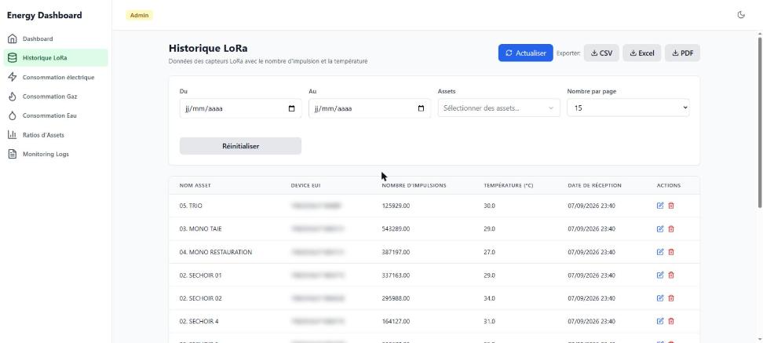

Le projet est parti d'un besoin concret : un technicien devait suivre les consommations d'un site industriel et n'avait pas d'outil pour le faire. Conso agrège le gaz, l'eau et l'électricité, les compare à des objectifs et permet de tout exporter en CSV, Excel ou PDF. Le tableau de bord est configurable, parce que chacun ne suit pas les mêmes indicateurs : chaque widget peut être réorganisé, affiché ou masqué.

D'où viennent les données
Deux sources. Des capteurs LoRa posés sur les équipements, qui remontent un nombre d'impulsions et une température, et l'API ENEDIS pour les points de livraison électriques. Les impulsions brutes sont ensuite converties en consommations réelles, et ce recalcul peut être relancé sur une période donnée quand un capteur a décroché.

Les identifiants matériels des capteurs sont volontairement floutés sur cette capture.
Mise en production
Un monorepo NestJS et React sur PostgreSQL, servi par Nginx et orchestré par Docker Compose. L'accès est filtré en amont par Cloudflare Access, en Zero Trust : personne n'atteint l'application sans être authentifié, y compris moi. L'intégration continue tourne sur GitHub Actions, avec des pipelines de build et de déploiement séparés.
Côté exploitation, les logs partent chez Datadog, l'API est protégée par Helmet et un rate limiter, un mode lecture seule permet de geler les écritures, et un scan de secrets tourne en pre-commit pour éviter qu'une clé finisse dans l'historique git.
Outils utilisés
NestJS, React, Vite, PostgreSQL, Docker Compose, Nginx, Cloudflare Access, GitHub Actions, Datadog, capteurs LoRa, API ENEDIS.